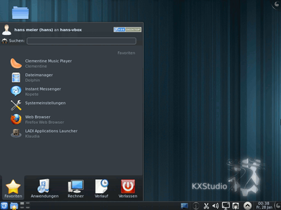

KXStudio
Dieser Artikel wurde für die folgenden Ubuntu-Versionen getestet:
Ubuntu 14.04 Trusty Tahr
Zum Verständnis dieses Artikels sind folgende Seiten hilfreich:
KXStudio  ist eine Multimediadistribution, die auf Ubuntu aufsetzt und von FalkTX ins Leben gerufen wurde. Sie ist in erster Linie für Musiker und Musikproduzenten interessant.
ist eine Multimediadistribution, die auf Ubuntu aufsetzt und von FalkTX ins Leben gerufen wurde. Sie ist in erster Linie für Musiker und Musikproduzenten interessant.
Die Besonderheit von KXStudio liegt in der Benutzung von:
optionalem Aufsatz von PulseAudio (PulseAudio benutzt JACK2 als Soundkarte)
standardmäßige Installation eines lowlatency-Kernels
optionale Installation eines realtime-Kernels
aktuelle Pakete (gerade von Multimediaprogrammen)
einer Reihe Eigenentwicklungen
, die auf ladish und JACK2 aufsetzen und deren Benutzung zum Teil erheblich vereinfachen.
Die Paketquellen sind durch mehrere PPAs innerhalb des Projekts realisiert. KXStudio unterstützt KDE, GNOME und ab Ubuntu 11.04 Unity.
Hinweis:
Bedingt durch die aktuellen Pakete und häufige Änderungen im PPA ändern sich verhältnismäßig oft diverse Paketabhängigkeiten. Man sollte also bei der Aktualisierung wissen, was man tut, und sich auch unbedingt vorher die Projekt-News ansehen.
Installation¶

KXStudio kann auf 2 verschiedene Arten installiert werden:
Neuinstallation¶
KXStudio ist als Live-CD (ca. 2 GiB) auf der Projektseite  verfügbar. Dort findet sich auch eine Installationsanleitung.
verfügbar. Dort findet sich auch eine Installationsanleitung.
Weiter geht es dann mit dem Setup.
PPA¶
Alternativ kann ein bestehendes Ubuntusystem über ein "Personal Package Archiv" (PPA) [1] ergänzt werden.
Dabei gelten folgende Vorraussetzungen:
(X,K)Ubuntu
die Prozessorarchitektur ist i386 oder amd64
Zuerst wird folgende Paketquelle mit KXStudio hinzugefügt [1]:
Adresszeile zum Hinzufügen des PPAs:
ppa:kxstudio-debian/kxstudio
Hinweis!
Zusätzliche Fremdquellen können das System gefährden.
Ein PPA unterstützt nicht zwangsläufig alle Ubuntu-Versionen. Weitere Informationen sind der  PPA-Beschreibung des Eigentümers/Teams kxstudio-debian zu entnehmen.
PPA-Beschreibung des Eigentümers/Teams kxstudio-debian zu entnehmen.
Damit Pakete aus dem PPA genutzt werden können, müssen die Paketquellen neu eingelesen werden.
Danach werden die weiteren Paketquellen hinzufügt durch die Installation eines Paketes aus dieser Paketquelle [4]:
kxstudio-repos (weitere Paketquellen)
 mit apturl
mit apturl
Paketliste zum Kopieren:
sudo apt-get install kxstudio-repos
sudo aptitude install kxstudio-repos
Anschließend wird das System als solches über ein Metapaket [2] abhängig vom Desktop installiert (das kann eine Weile dauern).
Für KDE:
kxstudio-desktop-kde4
mit apturl
Paketliste zum Kopieren:
sudo apt-get install kxstudio-desktop-kde4
sudo aptitude install kxstudio-desktop-kde4
Für Gnome:
kxstudio-desktop-gnome
mit apturl
Paketliste zum Kopieren:
sudo apt-get install kxstudio-desktop-gnome
sudo aptitude install kxstudio-desktop-gnome
Für Unity:
kxstudio-desktop-unity
mit apturl
Paketliste zum Kopieren:
sudo apt-get install kxstudio-desktop-unity
sudo aptitude install kxstudio-desktop-unity
Für andere Oberflächen wie z.B. XFCE existiert ein allgemeines Metapaket
kxstudio-desktop
mit apturl
Paketliste zum Kopieren:
sudo apt-get install kxstudio-desktop
sudo aptitude install kxstudio-desktop
Anschließend können optionale Metapakete nachinstalliert werden, z.B.:
kxstudio-meta-audio
kxstudio-meta-video
...
Der letzte Schritt besteht in der (optionalen, aber für Multimediasysteme sinnvollen) Installation eines Lowlatency und/oder Realtime-Kernels:
kxstudio-kernel-lowlatency
kxstudio-kernel-realtime
mit apturl
Paketliste zum Kopieren:
sudo apt-get install kxstudio-kernel-lowlatency kxstudio-kernel-realtime
sudo aptitude install kxstudio-kernel-lowlatency kxstudio-kernel-realtime
Hinweis:
Der Realtime-Kernel ist bedingt durch sein Alter nur noch auf Ubuntu 10.04 lauffähig.
Hinweis:
Die gesamte Installationsanleitung und eine Auflistung von allen Metapaketen findet sich auch der Projektseite .
Setup nach der Installation¶
Nach der Installation folgt ein Setup, mit dem man Einstellungen setzten kann und das System mit weiteren Programmen seinen Bedürfnissen anpassen kann. Die Einstellungsmöglichkeiten des Setups sind nach der ersten Einrichtung in den Systemeinstellungen wiederzufinden. Das Setup ist in mehrere Schritte unterteilt. Nachfolgend sind einige genauer erklärt:
2. Schritt - Setzen von Gruppenzugehörigkeiten¶
Im nächsten Schritt können Gruppen festgelegt werden, die die Benutzerrechte erweitern bzw. einschränken. Folgende Gruppen sind unter Anderen verfügbar:
Audio- erlaubt Zugriff auf die AudiogeräteCD-Rom- erlaubt Zugriff auf das optische LaufwerkDial Out- erlaubt Zugriff auf serielle Geräte, z.B ein ModemFax- erlaubt Fax- und Voicemailversand und -empfangFloppy- Zugriff auf das Diskettenlaufwerk, wird manchmal auf für SD-Kartenleser benötigtFuse- erlaubt Benutzung von FUSEPulse Acess- erlaubt Zugriff aus PulseAudio via Systemsocket; wird von Programmen, die PulseAudio benutzen, benötigtPlug Devices- erlaubt den automatische Zugriff auf externe Speichermedien, wie z.B. USB-SticksSamba Share- erlaubt Zugriff auf Ordner/Dateifreigaben via SambaSaned- erlaubt Zugriff auf einen Scanner per SANESSH- Benutzer, die dieser Gruppe angehören, können sich per SSH von einem Fremdrechner aus anmeldenVideo- Zugriff auf eine TV-Karte, Webcam und Nutzung von Hardwarevideobeschleunigung
3. Schritt Auswählen von weiteren (Meta-)Paketen¶
Es gibt verschiedene Gruppen von Paketen [2], die nachfolgend genauer aufgelistet stehen.
Meta-Pakete¶
| Name im Setup | Paketname | Kurzbeschreibung |
| KDE Official Artwork | kdeartwork | installiert das offizielle KDE-Artwork (Icons, Hintergrundbilder etc.) |
| KDE Community Artwork | kxstudio-meta-community-artwork | installiert Artwork, das nicht von den offiziellen KDE-Entwicklern erstellt wurde |
| KXStudio Desktop Extras | kxstudio-desktop-extra | installiert weitere KDE-spezifische Programme u.a. KOffice und einige Multimediaprogramme |
| KXStudio Recommended Games | kxstudio-meta-games | installiert diverse Spiele u.a. Frozen Bubble, Supertuxkart, Wormux |
| Restricted Stuff | kxstudio-meta-restricted-extras | empfiehlt einige Programme und Bibliotheken, die Ubuntu aus lizenzrechtlichen Gründen nicht standardmäßig installiert. |
KDE Meta-Pakete¶
Diese Pakete sind nicht KXStudio-spezifisch, sondern gehören zum KDE-Projekt
| Name im Setup | Paketname | Kurzbeschreibung |
| Accessibility | kdeaccessibility | Programme, um KDE besser bedienbar zu machen |
| Admin | kdeadmin | Programme zur Systemadministration, z.B. einen Logbetrachter |
| Artwork | kdeartwork | Das offizielle KDE-Artwork |
| Education | kdeedu | diverse Lernprogramme, wie z.B. einen Vokabeltrainer |
| Games | kdegames | eine Sammlung von ausgewählten Spielen |
| Graphics | kdegraphics | Eine Sammlung wichtiger Grafikprogramme (z.B. einen Bildbetrachter) |
| Multimedia | kdemultimedia | Einige Multimediaprogramme (z.B. Kmix zum Einstellen der Systemlautstärke) |
| Network | kdenetwork | Einige Netzwerkprogramme |
| PIM | kdepim | Programme, um seine persönlichen Daten zu verwalten, z.B. einen Terminplaner oder ein Mailprogramm |
| Toys | kdetoys | installiert "Desktop-Spielzeuge" wie Bildschirmschoner etc. |
| Utils | kdeutils | eine nützliche Systemwerkzeuge, z.B. ein Trayicon für Drucker |
| Full (All Packages) | kde-full | installiert alle Meta-Pakete |
Erweitert¶
| Name im Setup | Paketname | Kurzbeschreibung |
| Linux Kernel 2.6.32 Low-Latency | kxstudio-kernel-lowlatency | installiert den 2.6.32 lowlatency-Kernel |
| Linux Kernel 2.6.33 Real-Time | kxstudio-kernel-realtime | installiert den 2.6.33 realtime-Kernel |
| KXStudio Meta (Development) | kxstudio-meta-development | installiert diverse Pakete zur Programmkompilierung und Paketentwicklung |
| KXStudio Meta (CLI Apps) | kxstudio-meta-advanced | installiert Programme, die keine grafische Benutzeroberfläche haben |
Mehr Informationen über die Metapakete liefert apt-get.
Vorstellung der verwendeten PPAs¶
Die Entwicklung von KXStudio ist über mehrere PPAs realisiert. KXStudio setzt auf Kubuntu 12.04 auf.
Hinweis!
Zusätzliche Fremdquellen können das System gefährden.
Anmerkung: Hier ist besondere Vorsicht geboten, da in einigen PPAs extrem viel Pakete enthalten sind.
KXStudio-Pakete¶
Diese Pakete sind KXStudio-spezifisch und sollten auch nur für diese Distribution installiert werden.
ppa:falk-t-j/kxstudio - diverse Metapakete für KXStudio
ppa:falk-t-j/kxstudio-kde45 - Pakete, die für den stabilen Betrieb von KDE 4.5.x auf KXStudio notwendig sind
KXStudio-Team¶
Diese PPA´s haben die obigen Paketquellen weitestgehend ersetzt, können aber momentan mit ihnen ergänzt werden. Mehr Informationen findet man auch im Ubuntu-Forums-Kanal des Projekts .
ppa:kxstudio-team/kxstudio - soll die obigen KXStudio-PPAs ersetzen
ppa:kxstudio-team/games - ein spezielles PPA für aktuelle Spiele
ppa:kxstudio-team/kernel - ein PPA mit lowlatency- und realtime-Kernels
ppa:kxstudio-team/latest
ppa:kxstudio-team/ppa

- Erstellt mit Inyoka
-
 2004 – 2017 ubuntuusers.de • Einige Rechte vorbehalten
2004 – 2017 ubuntuusers.de • Einige Rechte vorbehalten
Lizenz • Kontakt • Datenschutz • Impressum • Serverstatus -
Serverhousing gespendet von